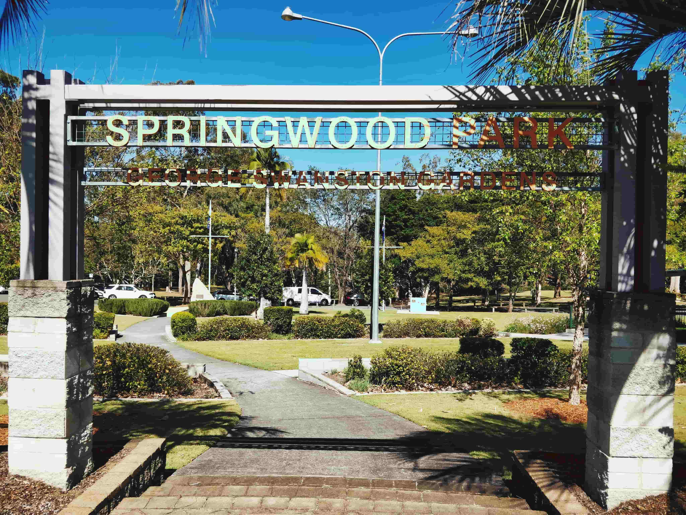

About
Why make this website?
A happy childhood can’t be complete without good food and local adventures! Each of these locations are filled with different options for exploration, which allows any visitor to come more than once.
About Springwood
Why is it called Springwood?
This suburb has changed significantly from what it once looked like. 66 years ago, Springwood was just bush with wild brumbies and lots of animals. There was a water spring in the middle of this area, which is why it is called Springwood today.

History of the Highway
When the large project of connecting Brisbane to the Pacific Highway began in 1965, Springwood was proposed as an area to use in development. It took more than 20 years for the motorway (M1) to be completed.

In 2022, you can follow us here...